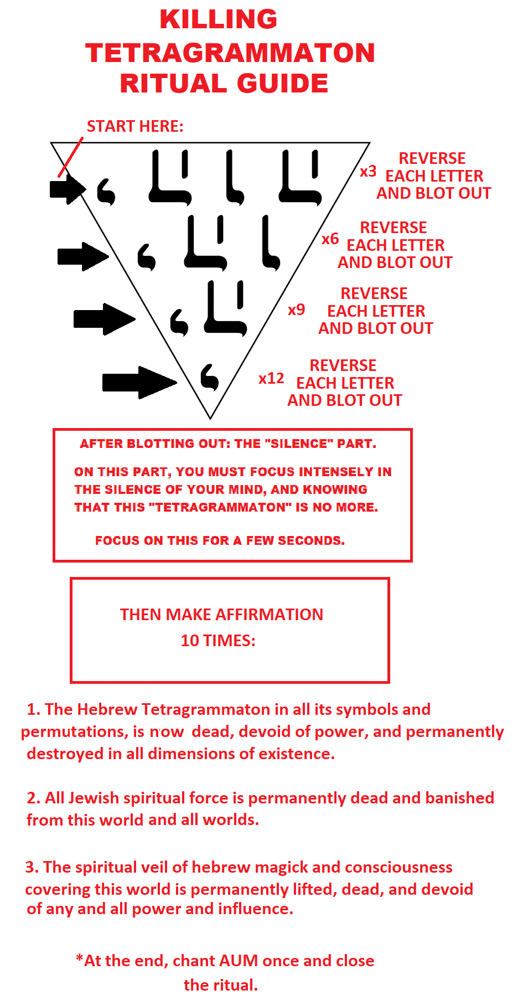

This is to be combined with the Final RTR, at the end of this. So one does their regular RTR as they always do, then after done, they start doing the ritual below. There is no need to increase any of the numbers of this ritual. They should be left as is for maximum effectiveness.
The erasing of this will happen as follows. One has to keep in mind or focus on the picture here. It is based on this, that one will be doing the destruction. This is to be done exactly after one is finished in doing the RTR and finished the affirmation of the Final RTR.
To get in less details for this to be less complicated, this below is just napalm. Explaining in elaborate fashion why this is as it is, should take half a book. It must be done consciously, and remember, the intent is to finish this off and eternally make this devoid of any form of existence.
As far as the technique goes, the same methodology of blotting out the Final RTR letters is being applied, but on a different way. For example, we will be reversing:

For the instructions, check here: Elaborate Instructions For Those With Less Experience, HERE
Back to
the Main Page for the Reverse Rituals